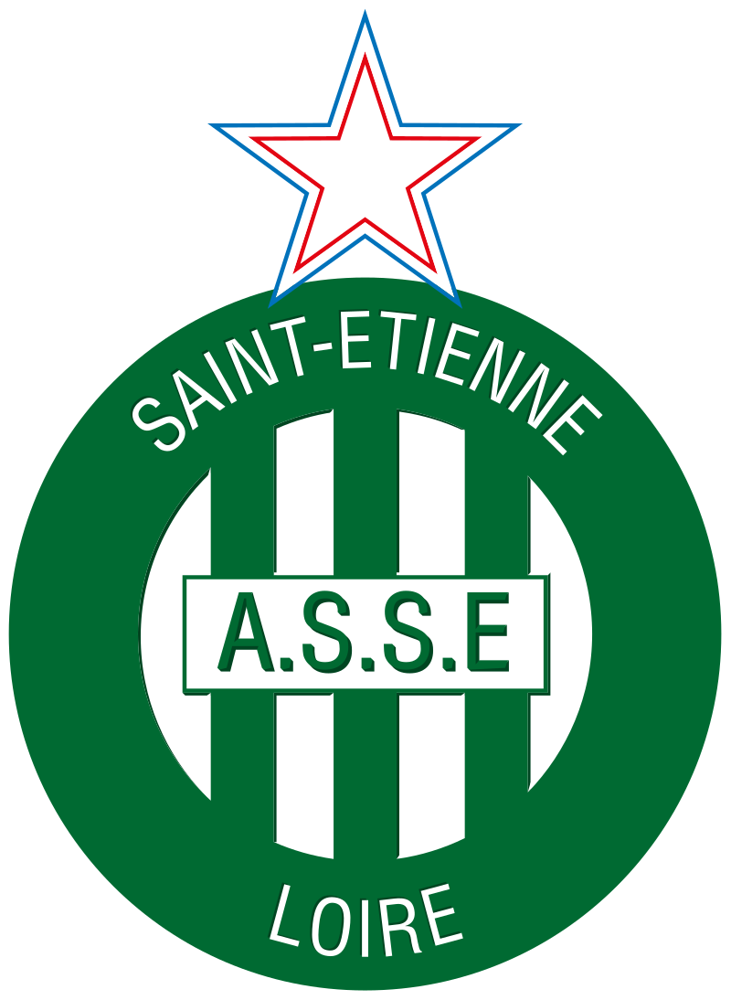
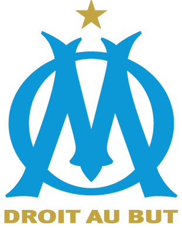
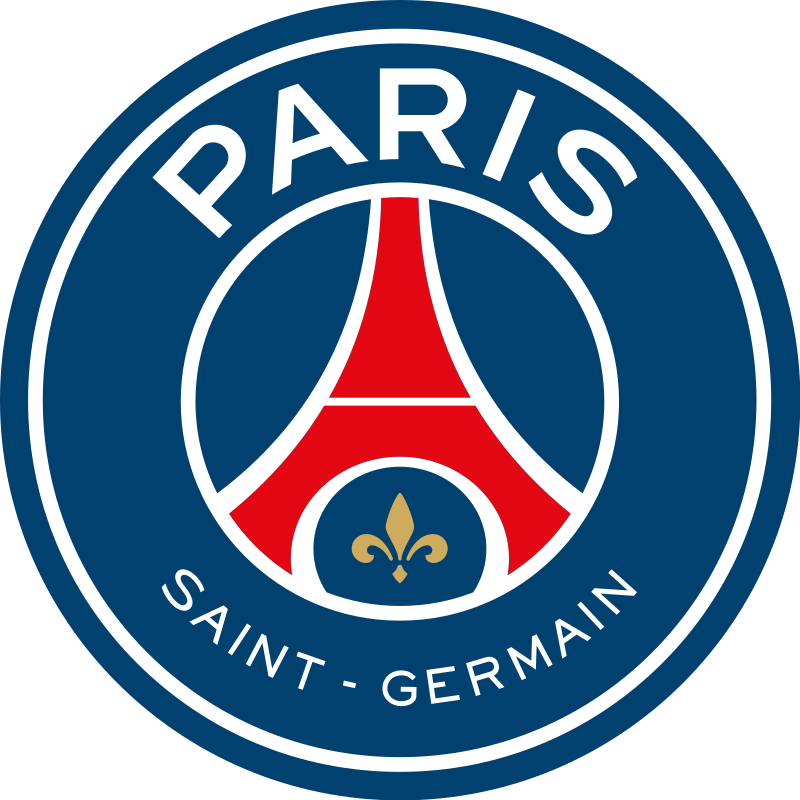
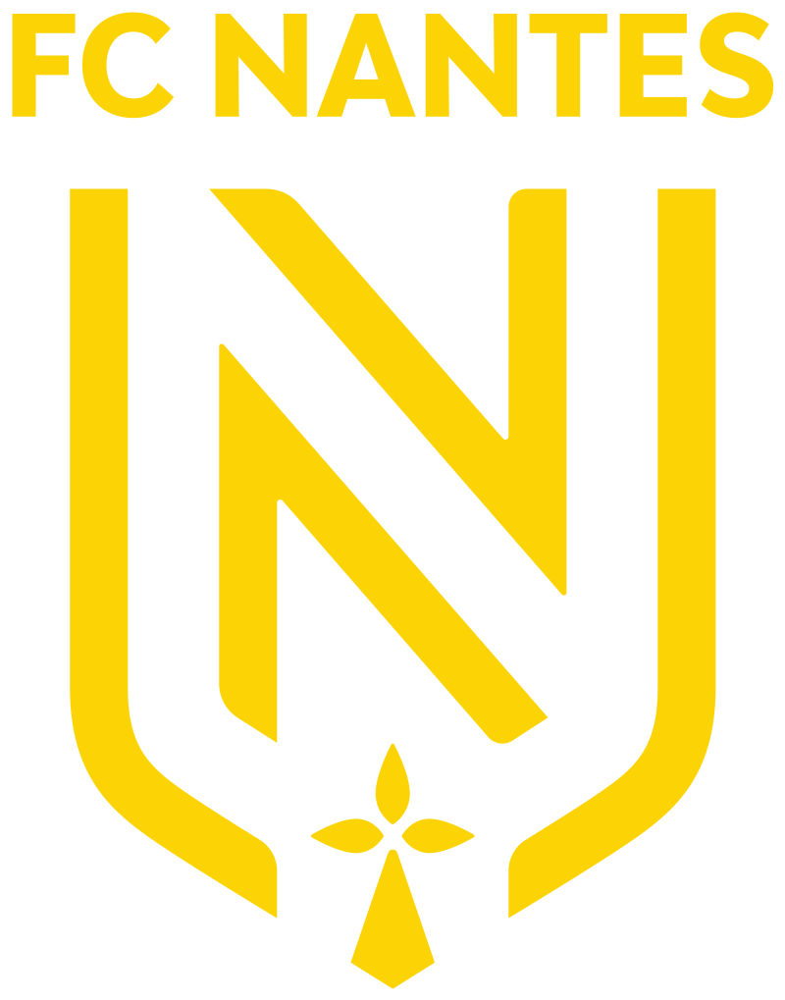
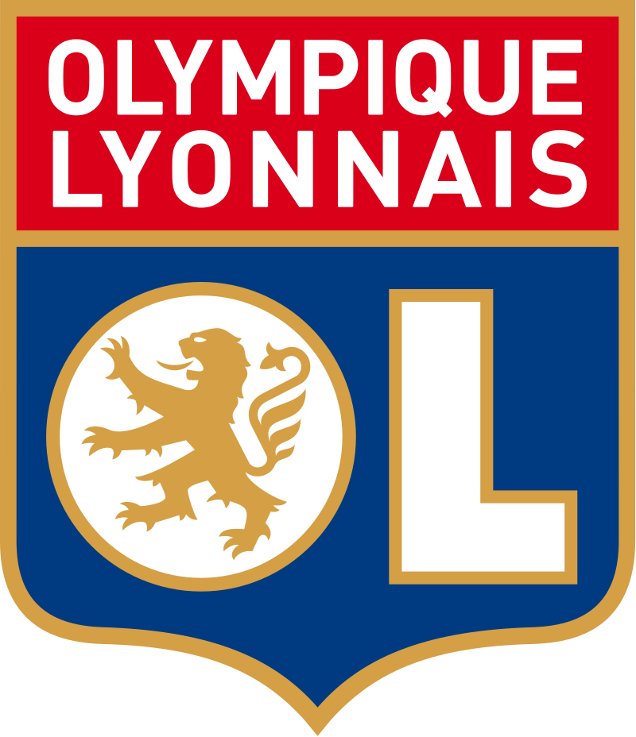
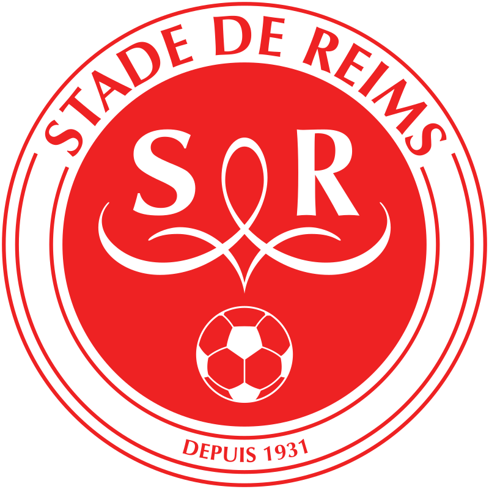
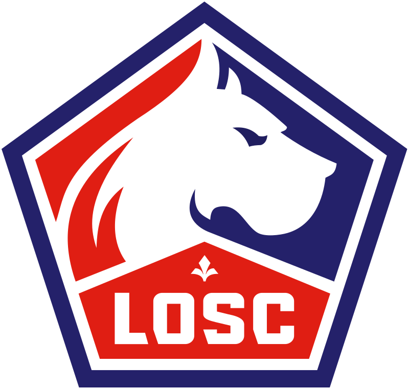
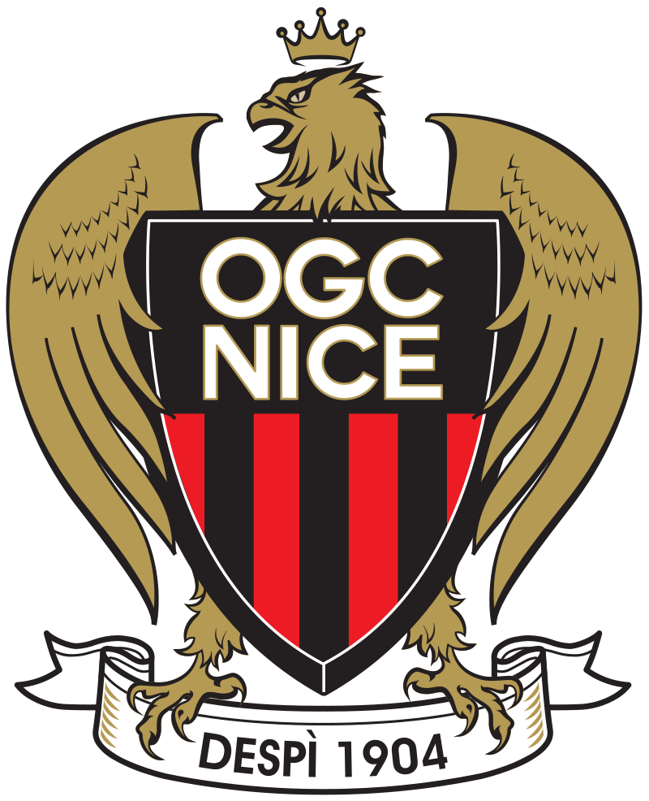

لدوري الفرنسي الدرجة الأولى (بالفرنسية: Championnat de France de football) أو (بالفرنسية: Ligue 1) (رسمياً دوري أوبر إيتس للدرجة الأولى لأسباب الرعاية (بالفرنسية: Ligue 1 Uber Eats) هو مسابقة الدوري لأندية كرة القدم المحترفة في فرنسا. تأسس بنظامه الحالي عام 2002، ويعدّ أحد دوريات النخبة على مستوى العالم. ينطلق الدوري الفرنسي في شهر أغسطس وينتهي في شهر مايو، ويتكون من 20 ناديًا، يلعب كل نادي منهم 38 مباراة، ليصبح المجموع 380 مباراة في الموسم الواحد، تلعب معظم المباريات يومي السبت والأحد، ولكن تلعب عدد قليل من المباريات خلال أمسيات منتصف الأسبوع. وهو مستمر حتى الآن. يعدّ نادي سانت إتيان الأكثر فوزًا باللقب بواقع 10 ألقاب، ويليه نادي أولمبيك مارسيليا بـ9 ألقاب٫ بينما البطل الحالي هو نادي ليل
درع الدوري الفرنسي
ملعب حديقة الأمراء , ملعب نادي باريس سانت جيرمان
سنوات البطولة |
عدد الألقاب |
النادي |
| 1956–57، 1963–64، 1966–67، 1967–68، 1968–69، 1969–70، 1973–74، 1974–75، 1975–76، 1980–81 |
10 القاب |

سانت ايتيان |
| 1936–37، 1947–48، 1970–71، 1971–72، 1988–89، 1989–90، 1990–91، 1991–92، 2009–10 |
9 القاب |

اوليبميك مارسيليا |
| 1985–86، 1993–94، 2012–13، 2013–14، 2014–15، 2015–16، 2017–18، 2018–19، 2019–20، 2021–22 |
9 القاب |

باريس سانت جيرمان |
| 1936–37، 1947–48، 1970–71، 1971–72، 1988–89، 1989–90، 1990–91، 1991–92، 2009–10 |
8 القاب |

موناكو |
| 1985–86، 1993–94، 2012–13، 2013–14، 2014–15، 2015–16، 2017–18، 2018–19، 2019–20 |
8 القاب |

نانت |
| 1964–65، 1965–66، 1972–73، 1976–77، 1979–80، 1982–83، 1994–95، 2000–01 |
7 القاب |

اويمبيك ليون |
| 1948–49، 1952–53، 1954–55، 1957–58، 1959–60، 1961–62 |
6 القاب |

ستاد ريمس |
| 1945–46، 1953–54، 2010–11، 2020–21 |
6 القاب |

ليل |
| 1945–46، 1953–54، 2010–11، 2020–21 |
4 القاب |

نيس |
ليونيل أندريس ميسي كوتشيتيني( مواليد 24 يونيو 1987) هو لاعب كرة قدم أرجنتيني، يلعب مهاجمًا لصالح باريس سان جيرمان في الدوري الفرنسي وقائدًا للمنتخب الأرجنتيني. وكان ما بين عامي 2000 و2021 أبرز لاعب في نادي برشلونة الإسباني، إلى أن أعلنت إدارة النادي في 5 أغسطس 2021 رحيل نجمها بعد أن تعذّر تجديد عقده رغم أنه وافق على تخفيض راتبه بنسبة 50%. في 8 أغسطس 2021 عُقد في النادي مؤتمر صحفي وداعي أجهش فيه ميسي بالبكاء وقال فيه إنه فعل ما بوسعه لتذييل العقبات أمام تجديد عقده. غالبًا ما يُعد ميسي أفضل لاعب في العالم ويعتبره الكثيرون من أعظم اللاعبين في تاريخ كرة القدم، وقد فاز ميسي بستة جوائز من الكرة الذهبية، وهو صاحب الرقم القياسي بستة أحذية ذهبية أوروبية. قضى كامل مسيرته الاحترافية مع برشلونة، حيث فاز بـ35 لقبًا مع النادي، بما في ذلك عشرة ألقاب في الدوري الإسباني، وأربعة ألقاب في دوري أبطال أوروبا، وسبعة ألقاب في كأس الملك. يعتبر ميسي هدافًا وصانع ألعاب إبداعي، ويحمل الأرقام القياسية لأكثر عدد من الأهداف في الدوري الإسباني (474)، وأكثر لاعب سجل في موسم الدوري الإسباني وأي دوري أوروبي آخر (50)، وأكثر من سجل هاتريك في الدوري الإسباني (36) ودوري أبطال أوروبا (8)، وأكثر من مرر تمريرات حاسمة في الدوري الإسباني (192)، وأكثر من مرر تمريرات حاسمة في الدوري الإسباني وأي دوري أوروبي آخر (21) وأكثر من مرر تمريرات حاسمة في كوبا أمريكا (12). وقد سجل أكثر من 750 هدفًا رسميًّا مع النادي والمنتخب، وهو أكثر من سجل لنادٍ واحد. وُلد ميسي ونشأ في وسط الأرجنتين، وانتقل إلى إسبانيا لينضم إلى برشلونة في سن 13 عامًا، حيث شارك لأول مرة في الدوري عندما كان عمره 17 عامًا في أكتوبر 2004. لقد أثبت نفسه كلاعب أساسي للنادي خلال السنوات الثلاث المقبلة، وفي أول موسم له كأساسي في 2008–09 ساعد برشلونة على تحقيق أول ثلاثية في كرة القدم الإسبانية. في ذلك العام، وحينما كان يبلغ من العمر 22 عامًا، على المستوى الدولي مع الأرجنتين، ميسي هو أفضل الهداف التاريخي لمنتخب بلاده. على مستوى الشباب، فاز ببطولة العالم للشباب لعام 2005، وأنهى البطولة بحصوله على كل من الكرة الذهبية والحذاء الذهبي، وفاز بالميدالية الذهبية الأولمبية في دورة الألعاب الأولمبية الصيفية لعام 2008.